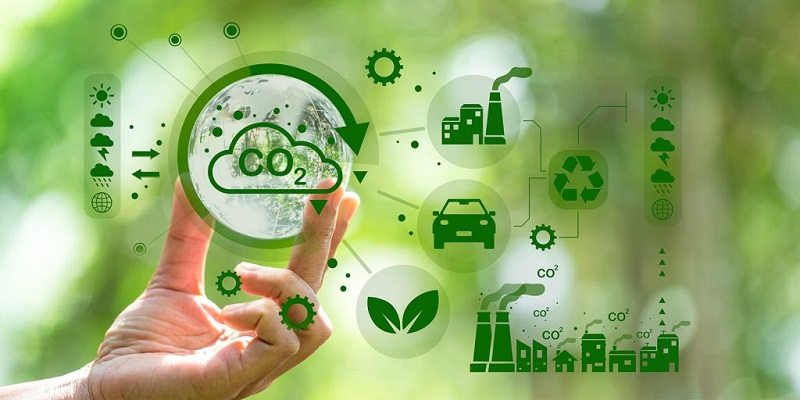

1. Rác thải điện tử
Pin cũ, điện thoại hỏng, máy tính lỗi thời… nếu vứt bừa bãi sẽ gây ô nhiễm môi trường.Trong pin và linh kiện điện tử có chứa chì, thủy ngân và nhiều kim loại nặng độc hại. Khi ngấm vào đất và nước, chúng có thể ảnh hưởng đến sức khỏe con người và sinh vật.
Giải pháp 3R trong công nghệ:
Reduce: Hạn chế mua thiết bị khi chưa cần thiết.
Reuse: Tái sử dụng hoặc sửa chữa thay vì vứt bỏ.
Recycle: Mang rác điện tử đến nơi thu gom để tái chế đúng cách.
2. Chuyển đổi số giúp giảm Carbon
- Dùng Google Drive thay vì in giấy.
- Học online giảm khí thải.
- Smart Home tiết kiệm điện.
